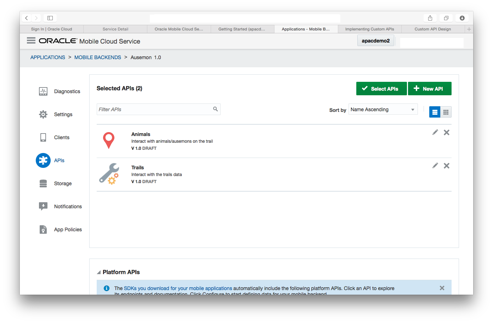

Ausémon - Explore the Centenary Trail.
Ausémon is a mobile application aimed at getting more people exploring and enjoying the Canberra Centenary Trail. It provides a fun and educational guide for the trail and the types of animals you could expect to see. Ausémon is gameified in the style of Pokémon Go to provide additional appeal to youth. Getting people outside and walking supports the Healthy Canberra initiative.
Ausémon uses a number of datasets, but could easily be extended to utilise more. The Canberra Centenary Trail location, or spatial, data comes from the ACT Government open data website; these data were split into two GeoJSON datasets, cleaned, and stored locally for use by the application. The animal location comes from the Atlas of Living Australia Specimen and Observation Data Searching API. We were originally planning on calling this API in real-time from the application, but found that it needed a vast aount of cleaning and enrichment; the API was used to extract the data and stored locally for use by the application.
IoT Demo at National Security Summit 2016 from Joel Nation on Vimeo.
About Us - Team rgb(255,0,0)
Our tireless team of crack coders (and one sales guy) worked over the weekend at GovHack Canberra 2016 to dream up, design and build the Ausemon app.
- Joel Nation - Team Leader/Integration Developer
- James Ryles - User Interface Design Developer
- Chris Flemming - Data Manipulator
- Damien McAullay - Media dude, orderer of pizza
Design
From a technical point of view, Ausémon is a typical 3-tier application with a front-end mobile application, a back-end database, and a middle-tier providing integration logic. The mobile application is built using Ionic and Google Maps API, then packaged inside a Cordova container for installation on a smartphone. All of the data has been stored in Oracle Database Cloud Service to take advantage of the spatial querying features; this significantly simplified the querying of data based on location, distance, and geofencing. And lastly, the middle-tier consists of the Oracle Mobile Cloud Service (MCS) to talk to the database (through Oracle Application Container Cloud Service for simplicity) and expose those data as APIs to be called by the mobile application. MCS also manages API security and provides analytics of the usage of Ausémon.
Our API scaffold right near the beginning of the projectIf you'd like to use this code, please check out the various GitHub projects that support it
ausemon-backend
This project is designed to run in Oracle Application Container Cloud Service, though it could run in any NodeJs server with OracleDB support. Instructions for use are:
- First instantiate your Database Cloud Service (or Oracle Database with Spatial support) and run the provided DDLs
- We use the `process.env` variables to control connection details to the service. These are available in ACCS, but you may need to modify them to suit your environment.
- If you want to run locally, before starting the node project run `npm install oracledb`. You will need to have the Oracle Instance Client installed
- Either zip up the directory (and remove the oracledb bpm) and upload to ACCS. Otherwise deploy to your node server
- Start with `node index.js`
ausemon-mcs
This project contains an export of the project used to power the API and analytics for the front-end. You can either deploy this into your Oracle Mobile Cloud Service or alternatively modify the front-end UI to point to the back-end directly. You will lose the analytical and user management capabilities the Mobile Cloud Service provides to the app though.
ausemon-frontend
This project is contains the ionic-based app that powers the Ausemon frontend. Instructions for use are:
- Ensure your ionic framework is installed and configured
- Modify the mobile cloud service configuration in www/js/services.js to reflect your mobile cloud service configuration
- Download the code and run with 'ionic serve browser'
GovHack - Evidence
We tweeted pretty extensively during the hack, so you can see a lot of our progress (and wins/frustrations) over the weekend. Take a look at Joel's or Damien's twitter feed for more messages and photos
We relied on the Oracle Developer Cloud Service environment provided with our Cloud Subscriptions to manage the devops process and track tasks
Our Agile board at one pointContact
If you are interested in this application, or the products and methodology that underpins it please reach out to joel.nation@oracle.com